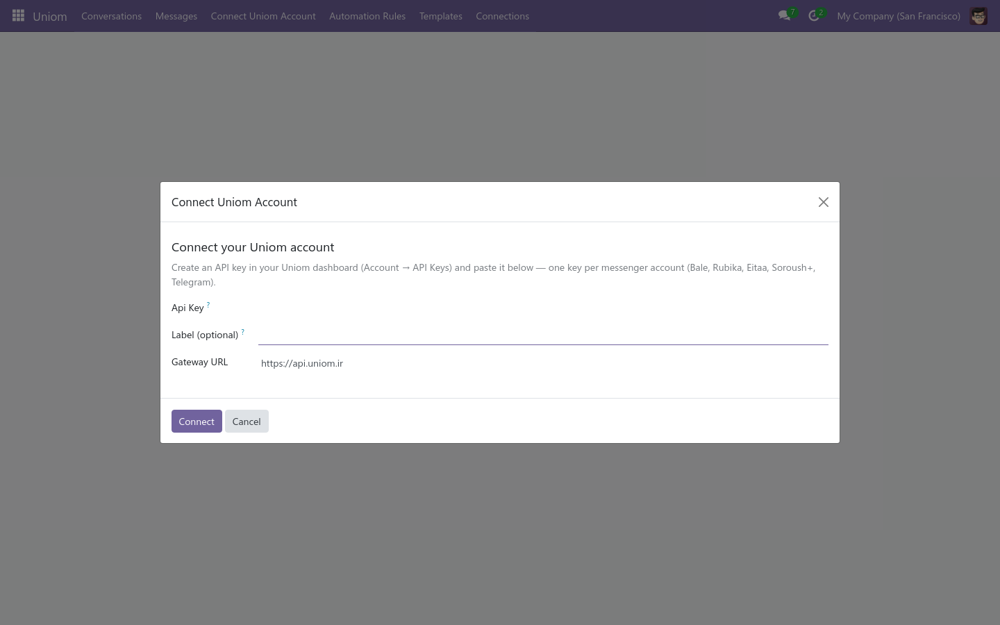
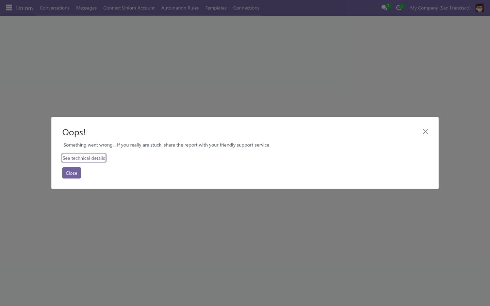
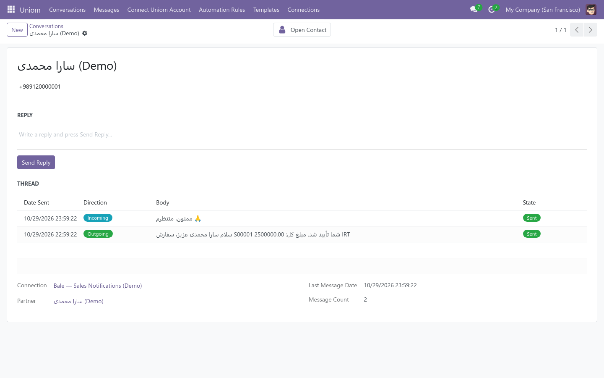

Login-style setup: paste one API key, press Connect

Fully translated and RTL: Persian and Arabic out of the box
Notify customers on Bale, Rubika, Eitaa, Soroush+ and Telegram straight from sale orders, invoices, payments and deliveries — through your Uniom account.
Ready rules for quotation sent, order confirmed, invoice posted (PDF attached), payment received, delivery done, product published and price change with in-place message editing in your channel. Works out of the box: paste one API key and you are live.
Every message is logged with its state, retried with backoff, honors
429 retry_after, and never duplicates a gateway-timed-out
send (504). Full per-record history in the chatter and a searchable log.
Send via Uniom button on partners, orders, invoices and
deliveries. Templates with {{ object.field }} placeholders,
English / Persian / Arabic with RTL, multi-company, user & admin
groups, inbound webhook for customer replies.

Messenger UI: every customer conversation in one place

Open a thread and reply straight from Odoo

Login-style setup: paste one API key, press Connect
Fully translated and RTL: Persian and Arabic out of the box
Only the data needed to deliver your messages: destination phone/chat id, the rendered message text and, if enabled, the record's PDF report. No Odoo credentials ever leave your server; the gateway URL and API key stay in your database. Customers can opt out per contact.